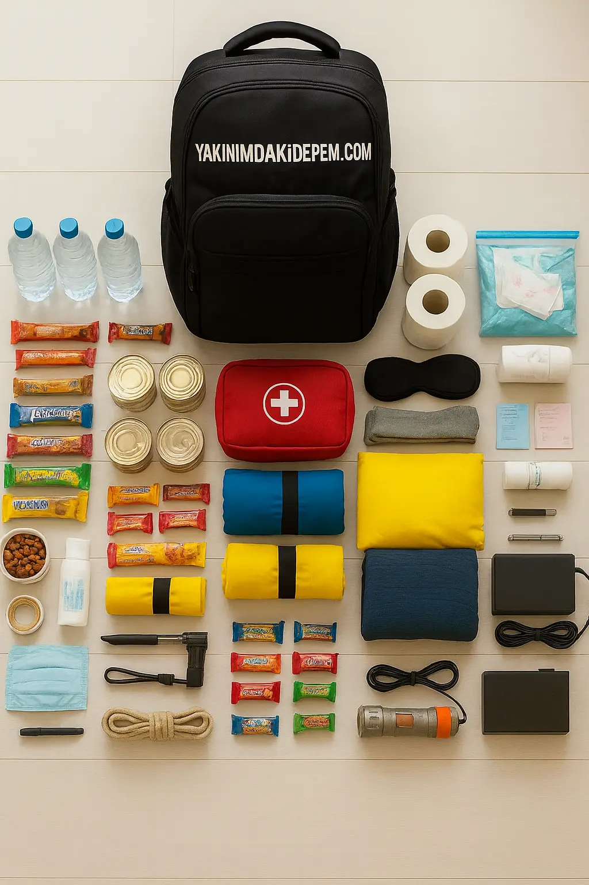

Deprem çantası ve içinde bulunması gereken temel malzemeler
Deprem çantasında olması gereken malzemeler
Deprem çantasında 72 saatlik temel ihtiyaçlar bulunmalıdır: kişi başı günde 2 litre su, 3 günlük dayanıklı yiyecek (kuru gıda, konserve), ilk yardım seti, el feneri ve yedek pil, düdük, ısıtıcı battaniye, hijyen ürünleri, kimlik fotokopisi, nakit para ve ilaç bilgisi.
Deprem Çantası Neden Bu Kadar Önemli?
Deprem gibi doğal afetler aniden gerçekleşir ve ilk 72 saat kritik öneme sahiptir. Bu süre zarfında acil yardım ekiplerinin ulaşması zaman alabilir. Deprem çantası, bu kritik sürede hayatta kalmanızı sağlayacak temel ihtiyaçlarınızı karşılar.
Önemli Uyarı
Deprem çantası sadece deprem için değil, sel, yangın, fırtına gibi tüm acil durumlar için hazırlanmalıdır. Her aile üyesi için ayrı çanta bulundurulması önerilir.
Deprem Çantası Hazırlama Adımları
1. Çanta Seçimi ve Konumlandırma
- Dayanıklı malzeme: Su geçirmez, yırtılmaz çanta tercih edin
- Boyut: 30-40 litre kapasiteli sırt çantası ideal
- Konum: Ev çıkışına yakın, kolay ulaşılabilir yerde
- Yedek: Araçta da bir deprem çantası bulundurun
2. Temel Yaşam Malzemeleri
Su ve Beslenme
- ✓ Kişi başına günde 4 litre olmak üzere 3 günlük su (12 litre)
- ✓ Konserve yiyecekler (açılımı kolay olanlar)
- ✓ Enerji barları ve kuruyemiş
- ✓ Bebek maması (bebek varsa)
- ✓ Manuel konserve açacağı
İlk Yardım ve Sağlık
- ✓ Kapsamlı ilk yardım çantası
- ✓ Reçeteli ilaçlar (3 günlük)
- ✓ Ağrı kesici, ateş düşürücü
- ✓ Antiseptik, bandaj, gazlı bez
- ✓ Termometre, eldiven
- ✓ Kişisel hijyen malzemeleri
Araç ve Gereçler
- ✓ El feneri ve yedek piller
- ✓ Radyo (pilli veya krank)
- ✓ Çok amaçlı çakı
- ✓ İp, halat
- ✓ Plastik torbalar
- ✓ Duct tape (güçlü bant)
- ✓ Matches (kibrit) veya çakmak
3. Önemli Belgeler ve Değerli Eşyalar
Belgeler (Su geçirmez poşette)
- Kimlik belgeleri (nüfus cüzdanı, ehliyet)
- Pasaport, vize belgeleri
- Sigorta poliçeleri
- Banka kartları ve nakit para
- Önemli telefon numaraları listesi
- Aile fotoğrafları (kimlik tespiti için)
Özel Durumlar İçin Ek Malzemeler
Bebek ve Çocuklar İçin
- Bebek bezi, ıslak mendil
- Bebek maması ve biberon
- Çocuklar için oyuncak ve kitap
- Çocuk boyu giysiler
Yaşlılar ve Engelliler İçin
- Gözlük, işitme cihazı pilleri
- Yürüteç, baston
- Özel ilaçlar
- Bakım malzemeleri
Evcil Hayvanlar İçin
- Hayvan maması (3 günlük)
- Su kabı
- Kayış, tasma
- Veteriner bilgileri
Deprem Çantası Bakımı ve Güncelleme
Düzenli Kontrol Listesi
- Her 6 ayda bir: Yiyecek ve ilaçların son kullanma tarihlerini kontrol edin
- Her 3 ayda bir: Pilleri test edin ve gerekirse değiştirin
- Her yıl: Giysileri mevsimine göre güncelleyin
- Her 6 ayda bir: Aile planınızı gözden geçirin
Deprem Çantası Saklama İpuçları
Ev İçi Saklama
- Çantayı ev çıkışına yakın, kolay ulaşılabilir yerde saklayın
- Yüksek raflardan kaçının, zemine yakın yerler tercih edin
- Çantayı su geçirmez bir kutu içinde saklayın
- Tüm aile üyelerinin çantanın yerini bildiğinden emin olun
Araç İçi Saklama
- Araçta da bir deprem çantası bulundurun
- Çantayı bagajda sabit bir yerde saklayın
- Yaz aylarında sıcaklık nedeniyle yiyecekleri düzenli kontrol edin
Deprem Sonrası İlk 72 Saat
Kritik Zaman Dilimleri
İlk 1 Saat
Güvenliğinizi sağlayın, çantanızı alın ve güvenli bir yere geçin
İlk 6 Saat
Radyo dinleyin, aile üyelerinizle iletişim kurun
İlk 24 Saat
Su ve yiyecek tüketiminizi planlayın, çevrenizi değerlendirin
72 Saat
Yardım ekiplerinin ulaşması beklenen süre
Sık Sorulan Sorular
Deprem çantası ne kadar süre yetmeli?
En az 3 gün (72 saat) yetecek malzeme bulundurulmalıdır. Bu süre, acil yardım ekiplerinin ulaşması için gerekli olan ortalama süredir.
Deprem çantası ne sıklıkla güncellenmeli?
Yiyecek ve ilaçlar her 6 ayda bir, piller her 3 ayda bir kontrol edilmeli. Giysiler mevsimine göre yılda bir güncellenmelidir.
Çocuklar için ayrı çanta gerekli mi?
Evet, her aile üyesi için ayrı çanta bulundurulması önerilir. Çocukların çantasında yaşlarına uygun malzemeler olmalıdır.
Sonuç
Deprem çantası hazırlamak, afetlere karşı en önemli hazırlık adımlarından biridir. Bu rehberdeki önerileri takip ederek, ailenizin güvenliği için gerekli malzemeleri temin edebilirsiniz. Unutmayın, hazırlık hayat kurtarır.
Hemen Başlayın!
Deprem çantası hazırlama listemizi indirin ve bugün hazırlıklara başlayın.
Detaylı Rehberi İncele